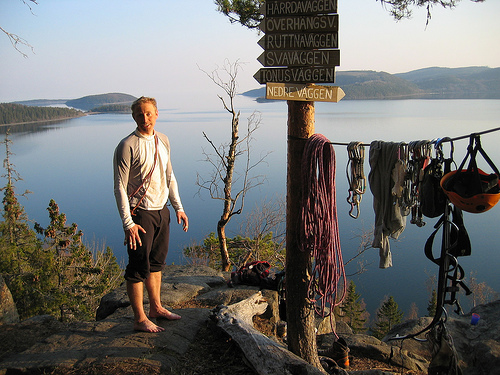
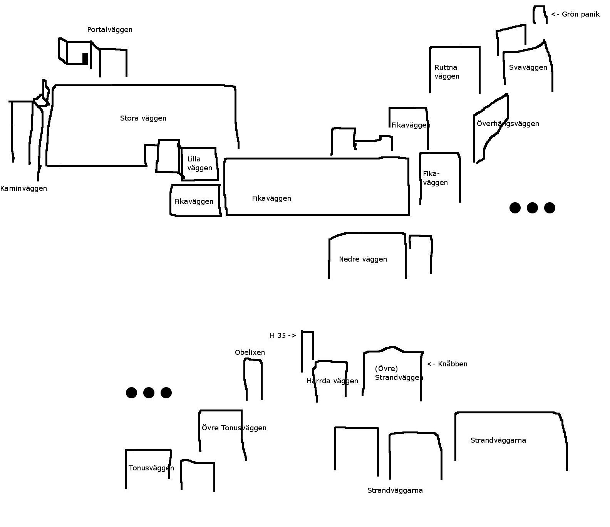
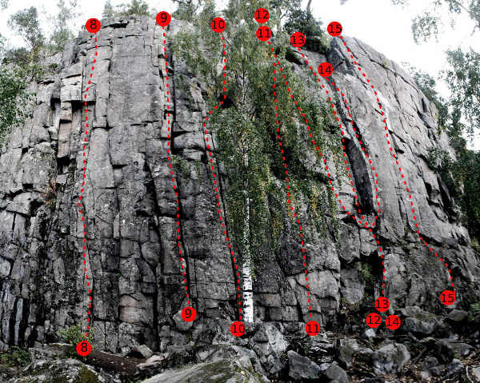
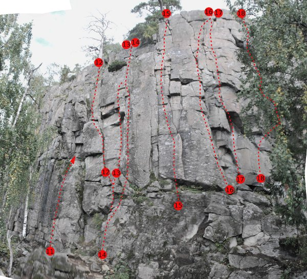
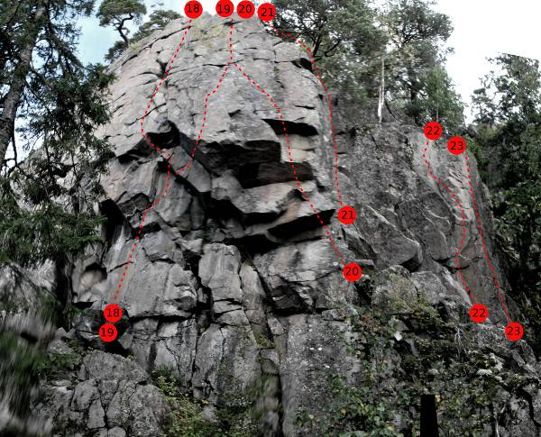
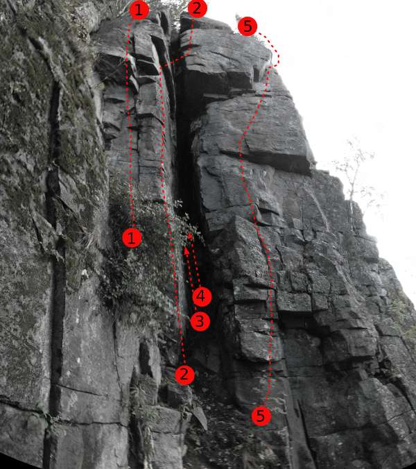
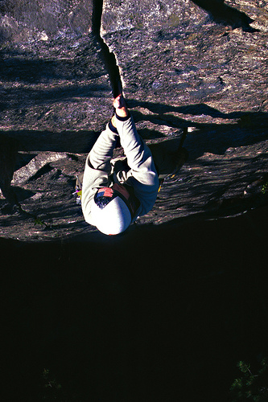
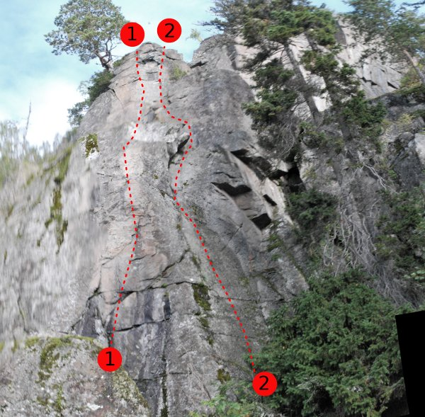
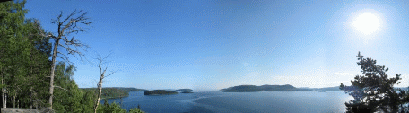

Ringkallen
GPS: 62.8711182847715,18.303909301757812
Allmänt
Talusbildningen på sydsidan av diabasberget Ringkallen formar ett av Sveriges vackraste klätterområden. Lättsäkrade sprickor med stödbultar när det känns läskigt. Firningsankare och lätt att förflytta sig mellan lederna. En superklippa för den som vill klättra korta kilsäkrade leder med låg gruvsamhetsgrad i 5-6 registret!
Diabasen har spruckit upp i relativt tunna och ofta parallella sprickor. Även om lederna är korta så är de branta och ihållande för sin grad, så ta med ett fylligt rack av kamkilar särskilt från fingerstorlek och nedåt.
Viktig accessinformation!

Höga Kusten Klätterklubb är medlem i vägföreningen. Det är en stor fast avgift för en liten klubb. Traditionellt sett har denna vägavgifts betalts genom försäljning av förare. Om det ska fungera med att ha föraren här på nätet så ber vi Ringkallen-frälsta dig som skriver ut den här föraren att hjälpa oss med vägavgiften. Gör det genom att sätta in 50 kr på Höga Kusten Klätterklubbs PlusGiro 85 90 96 - 0. Eventuellt överskott investeras såklart i berget!
Obs! Det är inte längre tillåtet att campa på kalhygget p.g.a. nyplantering.
Kategori:trad Kategori:vertikalt
Vägbeskrivning
Kör till Nordingrå. Ta till höger för den nedlagda OKQ8-macken. Kör förbi Häggvik där Café Mannaminne ligger. Efter ca 1,5 km pekar en gul vägskylt åt höger mot Häggnor. (För 50 kr per år så är det här även din väg!) Efter en knapp kilometer kommer du till en korsning tar du vänster. Femhundra meter senare kommer en andra korsning där du också tar vänster (skyltat 201). Sedan kör du rakt fram efter den "stora" vägen ända fram till en stor vändplan (5 km från där du svängde in mot Häggnor). 2009 stod där en liten stuga märkt Häggviks Jaktcamp. Eventuellt är stugan bortforslad till 2010. Parkera bilen.
Följ stigen i vägens förlängning. När ni kommer in i skogen ta stigen till vänster in i ett stort stenfält. Där är det förhoppningsvis rösat - följ rösena över stenfältet till en stig som leder upp till fikaplatsen vid klippan.
De skyltar du ser om Ringkallen pekar inte mot klippan utan mot toppen av berget Ringkallen.
Dit vill du inte.
Boende
Obs!
Det är inte längre tillåtet att campa på kalhygget p.g.a. nyplantering.
Tips
Historia
Utvecklades av ett gäng peppade grabbar i början av 90-talet. Per Öhman och bröderna Per & Jan Wermelin var mest tongivande. När klippan kring 1998 nått 95% av sin nuvarande ledmängd hade grabbarna bildat familj och flyttat och ett par år med låg aktivitet på berget följde. Sen 2003 uppmärksammas berget allt mer av Umeå-klättrare och en majoritet av klättrade meter på Ringkallen sker idag av klättrare från Umeå.
Andra aktiviteter
Sektorer
Ringkallen är uppdelat efter väggar. Väggarna hittar du genom att följa de superfina skyltarna (se bild ovan). Väl på väggen så finns små fina stenar uppsatta med lednamn målade. En sådan led är en
referensled
. Leder anges från vänster till höger.
Översikt väggar
Ringkallens många väggar fördelar sig ungefär som skissen nedan visar. Skissen är bruten på mitten vid punkterna.

Fikaväggen
Firningsankare finns
- 1 & 2
- Vänster leden/Ensamheten
- 5
- Klättra var du vill på den lilla väggen till vänster om offwidthen. Två leder enligt gamla föraren, idag klättrar alla ungefär mitt på och klipper sen en bult. Dessa två leder tar dig upp till Lilla väggen. Firningsankare.
- 3
- Regndans
- 6+
- Börja direkt till höger om offwidth-sprickan. Avsluta med det känsliga arétet. Seriös?
- 4
- Sträckbänken
- 6-
- Startar en liten bit till höger om offwidth-sprickan i ett lite brantare parti. Klättra rakt upp till en hylla. Därifrån följer man sprickor vidare uppåt. Antingen går man hela vägen till toppen, eller så stannar man vid ett block med en slinga runt. [[Referensled]].
- 5
- Foxtrot
- 6-
- Börjar tre meter till höger om Sträckbänken på hyllan som är ett snäpp upp.
- 6
- Stormvind
- 5
- En del ihåliga block, men det brukar gå bra ändå.
- 7
- Druidens Lycka
- 5
- Klättras aldrig.

- 8
- Tango för två
- 6
- Går upp till en liten nich med ett tak ovanför. Klättra upp och förbi taket till toppen. [[Referensled]].
- 9
- Lepra
- 5-
- Perfekt uppvärmning eller ett roligare sätt att ta sig till Stora Väggen än att gå. Bred och välsäkrad spricka. Passa på att njuta av utsikten när du ändå fastnat i sprickan strax innan toppen! Populär.
- 12
- Gräsänkling
- 4
- Följer vänstra sidan av den stora "kaminliknande" formationen.
- 13
- Negerpojken
- 5
- Följer högra sidan av den stora "kaminliknande" formationen.
- 14
- Molto Deppo
- 6
- Tunna sprickan till vänster om Jerry

- 15
- Jerry vad gör du
- 6-
- [[Referensled]]. En av dom tydligare linjerna på Fikaväggen -- klättra upp för flaket just vänster om överhänget och fortsätt upp via sprickor som gradvis blir större och snart övergår i block. Lättare ju högre man kommer.
- 16
- Amaretto
- 5+
- Sprickan direkt till vänster om Stramare Tyglar. Utmärkt diederklättring övergår i tunnare sprickor och lister mot toppen. Ta med små kamkilar för högsta komfort -- men kilar duger mer än väl.
- 17
- Stramare tyglar
- 6+
- Risken är överhängande att komma in i lättare klättring både till höger och vänster om leden.

- 18
- Strama tyglar
- 6
- [[Referensled]]
- 19
- Svindlande affärer
- 6+
- Startar som ''Strama tyglar'' går ut diagonalt åt höger genom taken i fikaväggens högerkant. Mestadels bult, någon kil i början samt (eventuellt) i slutet.
- 20
- Brustna illusioner
- 7-
- Klättra till vänster om och på arêten.
- 21
- Familjeleden
- 4
- Leden ligger i diedret mellan Brustna illusioner och Sista marängen. Stor spricka.
- 22
- Sista marängen
- 7-
- Brant arete. Helbultad + firningsankare
- 23
- Flygrädd
- 6
- Strax till höger om Sista Marängen. Samma firningsankare.
- 24
- Inspiration
- 5-
- [[referensled]] Strax till höger om grottan på väg mot Tonusväggarna.
-
- Sprickan
- 6
- Fin kort spricka rakt ovanför Amaretto.
-
- Vad skall den heta
- 6-
- Miniväggen 7 meter till höger om Sprickan. Vänstra sprickan.
-
- La France
- 5+
- Precis till höger om Vad skall den heta.
-
- Anomali
- 7-
- [[referensled]] Ligger på väggen "ovanför" La France. Borrbultar + ankare.
-
- Mantra
- 6
- Börjar i tydliga sprickan till höger om Anomali. Upp på hylla, sedan mäktig aréte- och sprickklättring till gemensammt ankare med Anomali.
Nedre väggen
Till nedre väggen tar du dig lättast genom att fira ner direkt från fikaplatsen.
{|
|- valign="top"
| width=300px |
-
- Pålägg
- 6-
- Svårsäkrad start.
-
- Djupa vågen
- 3+
- Mossig och skulle må bra av att få smaka på borsten.
Stora väggen
Firningsankare finns rakt ovanför
Oborstad
och det finns även ett ankare ovanför
Irrfärd
.
{|
|- valign="top"
| width="300px" |
-
- Therese
- 5
- Följ pockets i väggens högra del. Bultat ankare på hyllan.
-
- Sop-opera
- 5+
- Startar på den nedersta hyllan under stora väggen. Klättra upp förbi en björk och sedan med dragning åt vänster mot bullarna på slutet.
-
- Lågtryck
- 5+
- Startar på den nedersta hyllan under stora väggen. Bultad väggklättring de sista metrarna.
-
- Geometri
- 5+
- Starta antingen vid botten av Stora Väggen eller på hyllan något uppåt höger, och klättra genom möjligtvis mossig vägg mot den stora nischen. Efter det vidtar klockren spricka upp mot toppen.
-
- Fem C minus
- 6-
- Klättra rakt upp i spricklinjen direkt till höger om Geometri hela vägen till toppen. Leden bjuder på bra säkringar första halvan sedan kommer ett lätt parti som kräver lite mer uppfinningsrikedom. (Klättra inte denna som din första 6-)
-
- Fermenta
- 6+
- Pumpande led med spektakulär klättring den sista biten.
-
- AT-läkaren
- 6
- Lite otypisk för Ringkallen då denna led kräver färdighet att lägga kilar i stället för friends. Se till att det inte blir för glest mellan kilarna på mitten. Klättra AT-läkaren som en egen linje utan att ta vare sig i Oborstad eller Fermentas sprickor, använder du dig av dessa sprickor blir graden lägre...
-
- Oborstad
- 6-
- [[Referensled]]. Fin-fin väggled uppför Stora Väggen (och rakt genom en av firningspisterna). Följ spricksystemet upp till den rätt så spektakulära och bultade avslutningen.
-
- Piri-piri
- 6-
- Klättra spricklinjen strax vänster om hörnet upp till ett klart oroväckande flak (ryktet säger att man kan hänga knäveck här...), och vidare till "Piri-piri"-hyllan. Tappa inte modet här p g a eventuellt "pirr" i magen: slutet är närmare än vad man tror.
-
- Näsblod
- 5
- Fin och välsäkrad spricka till höger om hörnet. Avslutningen säkrad med en borrbult.
-
- Vårkänslor
- 5
- Ovanligt klurigt insteg leder vidare till något lättare väggklättring. Viss risk för markfall i starten: säkra noggrannt.
-
- Irrfärd
- 6-
- Är inte så svårsäkrad som man kan tro, men det är nog ändå bra att ha lite marginal på graden innan du går på denna. Ankare på toppen.
Lilla väggen
-
- På tu man hand
- 5+
- Riktigt hård om du går strickt i sprickan. Referensled.
-
- Styv kuling
- 6+
- Tre bultar. Kan behövas en stor friend för att säkra uttoppningen. Läcker arête med känsliga flytt.
-
- Återkomsten
- 6+
- Saknar bladbulten som skyddade kruxet sedan sommaren 2006. Kommer att få ett par borrbultar som ersättning. [[Referensled]].
-
- I sista minuten
- 6-
- Svårsäkrad. Spricksystem i väggens högra del
-
- Liten RP
- 6+
- Klättra upp till den lodräta sprickan som startar 5m upp och följ sedan den till toppen.
-
- Kvinna var är du?
- 5
- Sprickan till höer om Liten RP.
Kaminväggen
Den perfekta väggen att hålla till på under varma sommardagar.
är en riktig klassiker!

- 1
- Heta fingrar
- 6
- Spricka med ett block i. Fortsätt rakt upp förbi en bult.
- 2
- Delicato
- 6+
- Referensled. Leden startar till vänster om skrevans öppning. Klättra areten upp och förbi ledens första borrbult. Snedda av ut mot sprickan till höger och klättra till vänster om den upp mot det lilla taket. Tre till fyra meter ovan takete kan man välja mellan att fortsätta upp längs areten eller kliva över kaminen och ut på den brantare väggen till höger.
- 3
- Ulriks kamin
- 5-
- Fin och välsäkrad kamin! Startar 3 meter innanför Delicato i given spricka. Möjligheter till spricklättring finns nästan hela vägen om du är mer sugen på det. Starta vid mossig spricka och följ denna upp mot två klämblock (håller att stå på!) som passeras strax innan du toppar ut på hylla med jättetall på. Firningsankare strax nedanför hyllan.
- 4
- Sportklättrare har mindre roligt
- 4+
- Nästa spricka inne i kaminen.
- 5
- Mulltoa
- 6+
- Klättra upp och förbi bultarna. Sväng sedan ut till höger, där leden går ihop med Vindpinad.
- 6
- Vindpinad
- 6
- Höjd i grad från 6- till 6. Fränt, välsäkrad arete.
Övre Kaminväggen
Hit kommer man genom att klättra någon led på
Kaminväggen
, eller genom att fira ner från
Portalväggen
.
{|
|- valign="top"
| width="300px" |
-
- Skröda
- 3+
- Kliv över skrevan och följ sprickan till tallen.
-
- Ledsna fingrar
- 7
- [[Referensled]]. Svårsäkrad i starten, vid förstabestigningen användes förplacerade kilar.
-
- Lilla korset
- 7
- Runt hörnet till höger om 'Ledsna fingrar'.
Portalväggen

-
- V
- 6
- Cruxig. Sänkt i grad.
-
- Falska Profeter
- 5+
- Lite svårsäkrad väggtur till höger om protalen.[[Referensled]]
-
- Yngel
- 6
- Startar i portalen. Håller bara graden om du går rakt upp i fingersprickan utan att röra diedret.
-
- Nollåtta
- 4
- Diedret som går från hyllan till höger om portalen.
-
- Artificell Erosion
- 7-
- Väggtur som startar från en hylla. Går att säkra acceptabelt även om den ser tunn ut.
-
- Nollpositiv
- 5+
- Klockren, men ack så kort spricka. [[Referensled]]
-
- Frågetecken
- 5+
- Leden längst till höger på Portalväggen. Går upp till en liten tall som hänger ut över kanten. Riktigt små kammar och kilar är bra att ha.
Överhängande väggen
Till Överhängande väggen tar du dig via fasta rep som börjar till vänster om grottan vid Tonusväggen. Anmarschen är något exponerad och inte helt lämplig vid vått väglag.

Pet Problem
och
Näcken
startar nedanför Överhängande väggen.
- 1
- Pet Problem
- 6+
- Går till vänster om Näcken. Bultar + Firningsankare.
- 2
- Näcken
- 5-
- Passande namn! Går på den knottriga väggen strax före Tonusväggen. Samma firningsankare som på Pet Problem. Ankare uppe vid Överhängsväggen.
- 3
- Presidenten
- 8
- Den bultade leden längst till vänster på överhängande väggen. Hårdast på berget
- 5
- Kors då
- 7 R
- Starta som ''Rätt åt dig'' men traversera direkt vänster på rampen (dåligt säkrat) över till nischen på ''Jämtland, jämtland''. Klättra sedan den vänstra, tunnare sprickan (bra säkrat).
- 6
- Rätt åt dig
- 7+
- [[Referensled]]. Starten är lite pillrig att säkra (små kamkilar och en liten kil).
- 7
- Länken
- 7+
- Starta som ''Rätt åt dig'' och gå sedan in till första BB på ''Syra miner''. Fortsätt upp åt höger in i ''Stressgubben'' och avsluta leden. Finast på Ringkallen?
- 9
- Stressgubben
- 7
- [[Referensled]]. Firningsankare. Starta vid taköverhänget, stressande start, rakt upp på hyfsade grepp till borrbult. Tunn spricka i litet dieder, sen upp lite vänster till en hylla med nästa borrbult. Ta med en uppsättning kammar och ett kilknippe.
- 10
- Rolig
- 7+
- Välsäkrad och väldigt rolig.[[Referensled]]. Firningsankare.
- 11
- Vingar
- 5-
- [[Referensled]]. Bökigt att komma upp till insteget. Dieder.
- 12
- Tack, tack
- 7
- [[Referensled]]. Väggklättring på klippartiet till höger om huvudväggen. Firningsankare.
- 13
- Gummigubbar
- 8-
- [[Referensled]]. Firningsankare. Leden går ovanför självaste Överhängande väggen inne i en skreva till vänster om svaväggen. Följer en spricka diagonalt upp mot några bultar. Tung och trixig. Ofta kallt klimat.
Svaväggen
Till Svaväggen och Ruttna Väggen tar du dig antingen via Överhängande Väggen, eller genom grottan vid Tonusväggen. Inga av dessa vägar är att rekommendera vid regnväder.
{|
|- valign="top"
| width="300px" |
-
- Knytnäven
- 6+
- Ligger inne i ravinen, till vänster om Gryning. Följ den givna linjen till toppen av svaväggen. Lös!
-
- Gryning
- 6-
- Startar inne i ravinen på svaväggssidan. Omväxlande diederklättring som kan upplevas lite sandig.[[Referensled]].
-
- Hemlighet
- 5
- Lös! Se upp med denna. Passera det lilla taket och flöj srickorna till toppen. Och det enorma blocket du ser på övre halvan är löst. Klättras aldrig.
-
- Små och stora vänner
- 7-
- Till vänster om 'Panorama'. Går upp mot det sneda taket och slutar som 'Panorma'.
-
- Panorama
- 6+
- Förbi bultarna och sedan upp längs arêten. [[Referensled]].
-
- Domino
- 4+
- Klättra upp till blocket och traversera sedan vänster. Sikta på det oborstade hacket. Lös.
-
- Tre vise män
- 5-
- [[Referensled]]. Går via tydliga hyllor/formationer rakt upp i ett stort dieder som passerar två små tallar. Firningsankare 3 meter till höger om uttoppningen. Välsäkrad.
-
- Ragnarök
- 5
- Går strax till höger om Tre vise män, via diedret som viker av åt höger. Firningsankare.
Övre svaväggen
För att komma till Övre svaväggen så måste man klättra någon av lederna på Svaväggen först. Bamse och Lille skutt ligger på väggen direkt där man kommer upp. Grön panik ligger längre till höger på en egen klipppelare.
{|
|- valign="top"
| width="300px" |
-
- Bamse
- 6+
- En bult på slutet. Ankare.
-
- Lille skutt
- 7-
- Traversera ut till slutet på bamse för att undvika rutten klippa.
-
- ?
- 6
- Den flakiga linjen till höer av väggen. Ihåliga och ruttna flak. Välj en annan led.
-
- Grön Panik
- 6
- Riktigt brant tradd! Otroligt läcker. Ligger på en egen klippelare till höger om ''Övre Svaväggen''.
Ruttna väggen
För att komma till Ruttna väggen så gå upp förbi Överhängsväggen. Mellan Överhängsväggen och Svaväggen finns en ravin. Gå upp en bit i den längs några fasta rep. Därefter tar du vänster upp i en liten kamin.
Från vänster till höger.
{|
|- valign="top"
| width="300px" |
-
- Brems belägg
- 6
- Går att lägga en kamkil före första borrbulten. Över tak
-
- Önskningens stege
- 6
- [[Referensled]]. Traversera vänster 5m under toppen för att undvika lös klippa.
-
- Reptiler i brallan
- 6
- Lite läskig...
Tonusväggen
-
- Tonus
- 6+
- Kort led med stora grepp, men leden är överhängande och har lite pillriga säkringar så pump garanteras ändå. Perfekt uppvärmning för lederna på överhängande väggen.
-
- System
- 5+
- Brant för graden. Leden följer spricksystemet på areten till höger om Tonus. Blocken kan ibland låta lite ihåliga, men det brukar ändå gå bra.
-
- Stensöta
- 5+
- Offwidth-sprickan till höger om System. Börja lite längre till höger och bouldra förbi bulten så får du ticka grad 6. Toppankare.
-
- Snuttis
- 6
- Inte helt självklar att säkra. Gör inte denna som din första 6:a.
Nedre Tonusväggen
-
- Semper
- 6-
- Insteget är lite till vänster om ledens borrbult. Från hyllan klättrar man sprickan till toppen.
-
- Jällolabel
- 6+
- Glesbultad väggklättring.
-
- Tumba tarzan
- 5+
- Spricksystemet till höger om Jällolabel. Hård för graden.
Övre Tonusväggen
-
- Noll till hundra
- 5
- På en egen vägg till vänster. Ett sätt att ta sig till svaväggen. Inte helt ren.
-
- Bossanova
- 6-
- Bultat ankare. Kryp in under blocket för att komma till insteget
-
- Supernova
- 6+
- Bultat ankare.
-
- Snedsteg
- 6+
- Bultat ankare. Tydlig spricka på högra delen. Går ut till aretet, sedan via bb till toppen.
-
- Foton fobi
- 7-
- Bultat ankare, gemensamt med 'Foton fobi'. Startar som Snedsteg men går direkt ut till aretet och klättra förbi ett litet tak, därefter fortsätter man på högra sidan av aretet. Liten kamkil till första kruxet, lång slinga till slutet.
Hårrda väggen
På Hårrda väggen ligger en antal mycket fina leder, väl värda promenaden. Gå förbi tonusväggarna och följ rösena över rasbranten. På andra sidan rasbranten finner ni
Strandväggarna
nere till höger och
Hårda väggen
rakt upp.
{|
|- valign="top"
| width="300px" |
-
- Borrkrona
- 7
- Brant och kul. Två bultar + något eget. Inget toppankare, så ta med något extra för standplats på toppen.
-
- Rostiga vingar
- 6+/7-
- [[Referensled]].
-
- Hå hej med farbror frej
- 7-
-
-
- Banta med brännivn
- 7
- [[Referensled]]
-
- H35
- 7+
- [[Referensled]]. Går i ravinen ovanför [[Borrkrona]]. Följ sicksacksprickan upp mot bultarna. Firningsankare.
Partyhyllan
Väggen ligger tillhöger om utstegen på
Banta med brännvin
och
Sömnlös
.
{|
|- valign="top"
| width="300px" |
Strandväggarna
Alla leder har firningsankare.
{|
|- valign="top"
| width="300px" |
Tjäderskräck
och
Raveg
ligger på det första väggpartiet man kommer till om man följer skyltarna till Strandväggarna.
-
- Tjäderskräck
- 7
- Går på väggen längst till vänster på strandväggarna. Startar från hyllan.
-
- Raveg
- 6
- Sprickan till höger om Tjäderskräck.
Bulimia Neurosa
och
Krås
ligger på en egen pelare till höger om
Tjäderskräck
och
Raveg
.
-
- Bulimia Neurosa
- 6-
- Tydlig spricka som går genom ett litet tak på slutet. Till vänster om Krås. Ofta blöt. Bultat ankare.
-
- Krås
- 7
- Startar vid ett tunnt utstickande flak.
-
- Kattguld
- 6+/7-
- Går på en egen lite diagonal pelare
På den snyggt vattenpolerade nedre strandväggen ligger följande leder, som alla är väl värda att göra.
-
- Kung Triton
- 7-
- Längst till vänster på väggen. Välsäkrad och fysisk!
-
- Borrealism
- 7+
- I mitten på nedre strandväggen. En bult i starten och två i slutet visar vägen.
-
- Diskbrock
- 7
- Högra ytterhörnet på nedre strandväggen.
Följande leder ligger på väggen ovanför
Kattguld
,
Kung Triton
mfl.
Tryckt förare
Ringkallen klätterguide
distribueras via Höga kusten klätterklubb, eller LGJ Klätter- och högfjäll.
En mer utskriftsvänlig version av detta material kan hittas
.
Fler bilder

Fotosidan
innehåller många bilder från ringkallen.
In English
A beautiful crag perched above the sea on Sweden's High Coast. Mostly short well-protected routes from grade
4+
to
6
.
There are just four fully bolted routes in Ringkallen, the rest are protected by trad gear or by a mix of trad gear and fixed protection. Almost all routes are very safe which is one of the reasons for Ringkallen's perennial popularity. In the route-descriptions given above a few routes are marked as
referensled
. Every
referensled
has the route name painted on a small rock glued on to the cliff at ankle height.
Directions
In Nordingrå take right in the direction of Häggvik just before the closed gas-station. Drive past Häggvik and Café Mannaminne. After about 1.5 km(?) follow the sign-post pointing right up on a gravel-road toward Häggnor. Take left both at the first and the second fork and continue straight ahead on the wider road all the way to a big turnaround. Park your car and follow a path in the same direction. After a while you will reach some scree with cairns. Cross this to reach the crag.
If you see signs with "Rinkallen" on them, they are pointing to the top of the mountain, not to the crag!
Staying there
It is possible to camp on the turnaround and up by the crag. The campsite found 100 m from the turnaround, diagonally to the right (looking out towards the crag) is NOT to be used because of reforestation.
A nice cabin can be rented on
.
Kategori:Ångermanland Kategori:Engelska
Copyright (C) Permission is granted to copy, distribute and/or modify this document under the terms of the GNU Free Documentation License, Version 1.3